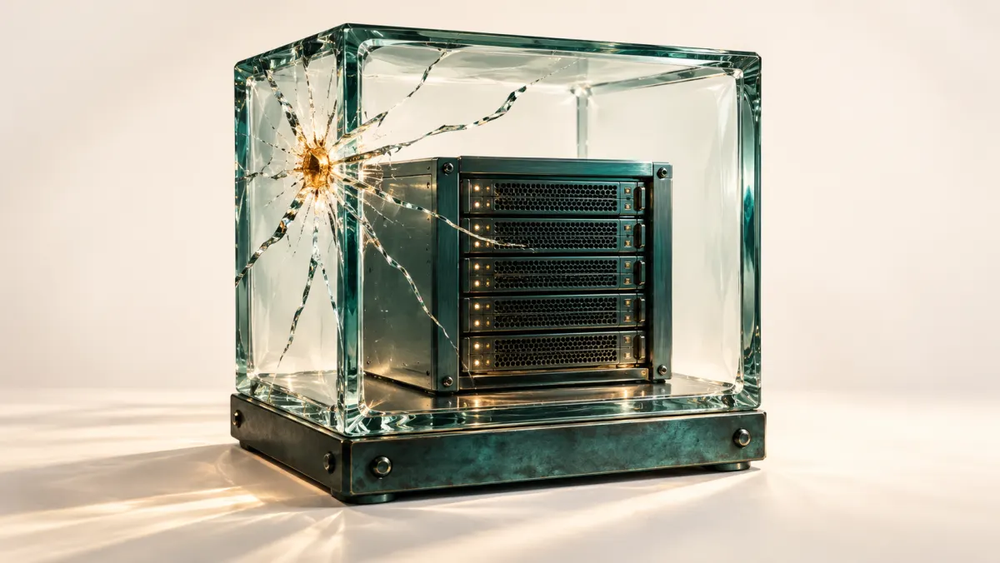
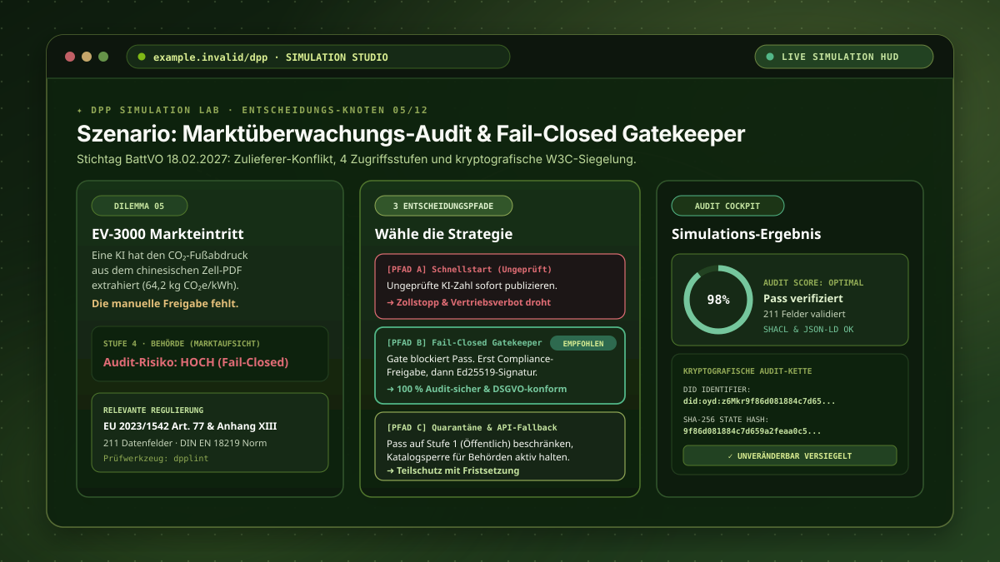
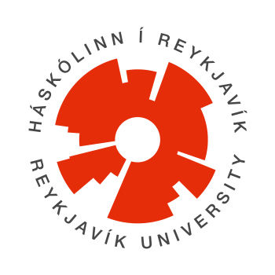

Freitag, 18:00 Uhr: Ransomware verschlüsselt erste Fileserver, sensible Kundendaten fließen ab. Trennt ihr das gesamte Firmennetzwerk vom Internet?
SIMULATIONEN UND KURSE FÜR LEHRE UND WEITERBILDUNG
Hier liest du nicht über Entscheidungen, du triffst sie.
Im Team, mit knappem Budget und Folgen,
die du in den Zahlen siehst.
Eine Schlüsselszene aus jeder Lernwelt. Wie entscheidest du?

Freitag, 18:00 Uhr: Ransomware verschlüsselt erste Fileserver, sensible Kundendaten fließen ab. Trennt ihr das gesamte Firmennetzwerk vom Internet?
Ein Lead-Investor bietet 450.000 € für 28 % Anteile plus Vetorecht bei Folgefinanzierungen. Schlagt ihr ein?
Das margenstarke Kerngeschäft verliert 14 % Marktanteil an asiatische Angreifer. Wohin fließt das F&E-Budget 2028?
Die Churn-Rate im Onboarding explodiert. Die Fachabteilung fordert ein 200.000-€-App-Redesign. Was priorisiert ihr?
Ein autonomer KI-Agent soll eingehende Reklamationen bis 5.000 € eigenständig erstatten. Wie richtet ihr die Freigabe ein?

Stichtag 18.02.2027: Eine KI hat den CO₂-Wert eurer Traktionsbatterie aus einem PDF gelesen, die menschliche Freigabe fehlt noch. Veröffentlicht ihr den Pass?



01 / DIE LERNWELTEN
Keine graue Theorie: Erneuert etablierte Unternehmen, gründet Start-ups im gemeinsamen Markt, meistert Cyber-Ernstfälle, baut eigene KI-Agenten und macht Produkte fit für den Digitalen Produktpass (DPP).
Innovationsmanagement & Unternehmenserneuerung
Das Kerngeschäft erodiert, neue Wettbewerber greifen an: Führt eines von sieben österreichischen Unternehmen durch sieben Jahre Wandel. Balanciert das Kerngeschäft gegen riskante F&E-Wetten und baut neue Venture-Einheiten auf, bevor der Markt wegbricht. Alle Ereignisse im Spiel sind fiktiv.
Die Entrepreneurship-Simulation
Kein Planen im Vakuum: Alle Teams im Raum führen eines von fünf fiktiven Unternehmen im selben Wiener Beherbergungsmarkt und konkurrieren um dieselben Marktanteile. Von Problem-Interviews und Seed-Checks über Unit Economics bis zu harten Term Sheets: Wer verbrennt die Runway und wer skaliert zum Exit?
Die Cybersecurity-Management-Simulation
Ransomware breitet sich aus, sensible Kundendaten fließen ab. Im 6-köpfigen Führungsteam (CEO, CFO, CISO, COO, Legal, Kommunikation) zählt jede Entscheidung: Wer voreilig abschaltet, stoppt den Betrieb; wer zögert, riskiert hohe Strafen nach NIS2 und DSGVO. Vier fiktive Unternehmen, 15 Jahre von 2016 bis 2030.
Service Design & Customer Experience
Kunden kaufen kein Produkt, sie erleben Momente der Wahrheit. Steuert eines von sieben österreichischen Fallunternehmen durch 8 Runden: von Empathie-Interviews und Service Blueprints (Frontstage vs. Backstage) bis zu Multi-Touchpoint-Ökosystemen und Kennzahlen, die im Alltag funktionieren. Alle Ereignisse im Spiel sind fiktiv.
KI-Kompetenz, Agenten & digitale Produktentwicklung
Vom ersten strukturierten Prompting bis zur lauffähigen Web-App mit autonomen KI-Agenten: 16 Stationen vom 5-Bausteine-Briefing und Faktencheck über Microsoft Copilot & Power Automate bis zu modernem Vibe Coding mit GitHub, Vercel & Supabase (konform nach Art. 4 EU AI Act).
Digitaler Produktpass, ESPR & Live-Infrastruktur
Vom regulatorischen Pflichten-Dschungel (ESPR, Batterieverordnung, CPR) bis zum kryptografisch gesicherten Echt-Pass: 12 interaktive Stationen mit 6 produktiven Live-Webinterfaces von Sustainista – Pflichtenfinder, Elektro-DPP-Engine, 4-Stufen-Rollen-Firewall, SHA-256-Hash-Kette und GS1 Digital Link.
↗ Die Lernwelten öffnen sich in einem neuen Tab. Öffentliche Demorunden sind ohne Login spielbar.
02 / LEITGEDANKEN
Jede Lernwelt baut auf einem Gedanken auf, den ich für zentral halte. Die Sätze geben die Kernidee der genannten Personen sinngemäß wieder, Quelle jeweils darunter.
„People don't want to buy a quarter-inch drill bit. They want a quarter-inch hole.“Theodore Levitt, zitiert in Christensen et al., HBR 2005
Professor an der Harvard Business School · Begründer der Value-in-Use-Perspektive
„SAS is ‘created’ 50 million times a year, 15 seconds at a time.“Jan Carlzon, Moments of Truth, 1987
CEO Scandinavian Airlines (SAS) · Pionier kundenorientierter Frontline-Führung
Gerade gut geführte Unternehmen scheitern, weil sie auf ihre besten Kunden hören und dorthin investieren, wo heute die höchsten Margen liegen.sinngemäß nach Clayton M. Christensen, The Innovator's Dilemma, 1997
Harvard Business School · Autor von „The Innovator's Dilemma“
„There are no facts inside the building, so get the heck outside.“Steve Blank, The Startup Owner's Manual, 2012
Stanford University & UC Berkeley · Begründer des Customer Development Modells
„Security is a process, not a product.“Bruce Schneier, Secrets and Lies, 2000
Harvard Kennedy School · International renommierter Sicherheitsforscher & Kryptologe
„AI is the new electricity.“Andrew Ng, Vortrag an der Stanford Graduate School of Business, 2017
Stanford University · Mitgründer von Coursera und Google Brain
In einer Kreislaufwirtschaft behalten Produkte und Materialien ihren Wert nur dann, wenn ihre Identität, Zusammensetzung und Historie über den gesamten Lebenszyklus bekannt bleiben.sinngemäß nach Walter R. Stahel, The Circular Economy, Nature 2016
Product-Life Institute Genf · Begründer der Performance & Circular Economy
Fotos über Wikimedia Commons: Jan Carlzon, Frankie Fouganthin, CC BY-SA 4.0, Clayton M. Christensen, World Economic Forum, CC BY-SA 2.0, Steve Blank, Eric Millette, CC BY-SA 3.0, Bruce Schneier, Rama, CC BY-SA 2.0 FR, Andrew Ng, TechCrunch, CC BY 2.0. Ausschnitte zugeschnitten.
FÜR HOCHSCHULEN & UNTERNEHMEN
Du suchst mehr als den nächsten Foliensatz? Hier wird Wissen zur Entscheidung: Teilnehmende übernehmen Rollen, vertreten unterschiedliche Interessen und reflektieren gemeinsam die Folgen.
LEHRE, DIE INS HANDELN BRINGT
Für Lehrende, Studiengangsleitungen und die Hochschuldidaktik, die fachliche Modelle mit Diskussion, Anwendung und Reflexion verbinden möchten.
Bereits in der Hochschullehre erprobt: Im Einsatz an der FHWien der WKW, Modul University Vienna, FH Wiener Neustadt, Reykjavik University und am CETL Institute.
Einsatz in der Lehre besprechenEine Simulation kann die fachlichen Themen einer Lehrveranstaltung verbinden. Entscheidungen wirken in späteren Runden weiter und liefern Material für den nächsten Seminartermin.
Rollenspezifische Prioritäten bringen Studierende ins Gespräch. Sie müssen Modelle anwenden, Zielkonflikte erkennen und eine gemeinsame Wahl vertreten.
Briefing, Begründung und sichtbare Folgen bieten Anknüpfungspunkte für ein Debrief. Prüfungsform, Bewertung und Einbindung in dein Modul werden separat abgestimmt.
WEITERBILDUNG IM UNTERNEHMEN
Für Personalentwicklung, Learning & Development, Innovationsverantwortliche und Führungsteams, die über Bereichsgrenzen hinweg lernen möchten.
Einsatz im Unternehmen besprechenReinvent und Venture Run machen unterschiedliche Sichtweisen auf Chancen, Budgets und Geschäftsmodelle zum Ausgangspunkt einer moderierten Teamdiskussion.
Under Attack stellt Sicherheit, Finanzen, Betrieb, Recht und Kommunikation nebeneinander. Die öffentliche Beschreibung sieht auch einen kompakten Einsatz als Leadership-Tabletop vor.
Welche Annahmen haben uns geleitet? Was hat eine andere Rolle gesehen? Ein anschließendes Debrief kann diese Fragen auf euren Arbeitskontext übertragen. Format und Begleitung werden gemeinsam geklärt.
ORIENTIERUNG FÜR DEINE AUSWAHL
| Lernwelt | Was Teilnehmende üben | Aktueller Umfang | Passt zu deinem Vorhaben? |
|---|---|---|---|
| Reinvent | Innovationschancen bewerten, Ressourcen priorisieren, Open Innovation und Portfolioentscheidungen begründen. | 7 Spielrunden + Abschluss-Debrief (8 Termine) 2 bis 6 Rollen · Deutsch | Reinvent anfragen ↗ |
| Venture Run | Geschäftsmodell, Finanzierung und Wachstum im Wettbewerb von fünf fiktiven Unternehmen entwickeln. | 8 Runden 4 Rollen, ab 2 Personen · Englisch | Venture Run anfragen ↗ |
| Under Attack | Cyberrisiken einordnen, Sicherheitsinvestitionen abwägen und Entscheidungen über mehrere Führungsrollen vertreten. | 15 Jahresrunden (2016 bis 2030) 6 Rollen · 4 fiktive Unternehmen · Englisch | Under Attack anfragen ↗ |
| Service Matters | Servicegrenzen setzen, Customer Journeys & Blueprints erarbeiten, Peak-End-Sequenzen gestalten, Prototypen testen und Regelbetrieb absichern. | 8 Runden 7 österreichische Fallunternehmen · Deutsch | Service Matters anfragen ↗ |
| Human × AI AI Literacy | KI im Innovationsprozess & Büroalltag wirksam einsetzen: 5-Bausteine-Briefing, Faktencheck, Microsoft Copilot, Copilot Studio Agenten-Labor, EU AI Act sowie Vibe Coding (GitHub, Vercel, Supabase, Sanity). | 16 Stationen in 3 Etappen 32 Copilot-Challenges, Agenten-Labor & Modell-Kompass · ca. 6 Std. · Deutsch | KI-Kurs anfragen ↗ |
| DPP Simulation Lab Digitaler Produktpass | EU-Pflichten nach ESPR & Batterieverordnung bestimmen, Produktpässe strukturieren, Zugriffsstufen steuern, nach W3C & SHACL validieren, per SHA-256-Hash-Kette absichern und GS1 Digital Links erstellen. | 12 Stationen in 3 Etappen 6 Live-Webinterfaces (Sustainista), Live-Cockpit & 90-Tage-Planer · ca. 4 Std. · Deutsch | DPP-Kurs anfragen ↗ |
Runden sind simulierte Zeit, keine Kursjahre. Für alle vier Simulationen gibt es eine öffentliche Demorunde ohne Login. Unterrichtssprache, Dauer, Zugänge und Einsatzumfang werden vorab bestätigt.
CURRICULUM & SEMINARABLAUF
Von der Einbettung ins Modulhandbuch bis zum Abschluss-Debrief im Hörsaal oder Führungsworkshop.
Welche Zielgruppe soll was üben? Wir besprechen Thema, Vorkenntnisse, Gruppengröße, Termine und den Kontext eurer Lehrveranstaltung oder Weiterbildung.
Jede Simulation hat eine öffentliche Demorunde ohne Login. Für einen gemeinsamen Durchgang buchst du dir einen Termin.
Lizenzumfang, Preis, Zugänge, Begleitung, Technik und Datenschutz werden vor einem verbindlichen Einsatz geklärt und im Angebot beschrieben.
Teams und Rollen vorbereiten, Entscheidungen durchführen und Zeit für das Debrief reservieren. Verantwortlichkeiten und die Auswertung werden vorab abgestimmt.
Richtwerte für eine 90-minütige Seminareinheit. Für Blocklehrveranstaltungen, Executive-Formate und die Selbstlernkurse (Human × AI, DPP Simulation Lab) wird der Zeitplan individuell auf das Curriculum abgestimmt.
DER PASSENDE RAHMEN FÜR DEIN VORHABEN
Drei Wege zur Abstimmung. Die Lizenzmodelle werden für deinen konkreten Einsatz angeboten; Preise und Leistungsumfang legen wir im individuellen Angebot fest.
Wenn du eine Lernwelt für eine bestimmte Lehrveranstaltung, einen Durchgang oder eine abgegrenzte Lerngruppe einsetzen möchtest.
Wenn eine Hochschule oder ein Unternehmen Simulationen über ein Jahr hinweg in mehreren Durchgängen nutzen möchte.
Wenn du mehrere Bereiche verbinden, ein Workshopformat besprechen oder besondere Anforderungen einbringen möchtest.
Die Modelle sind eine Orientierung für deine Anfrage. Nutzerzahlen, Leistungen und Konditionen halten wir vor dem Start im Angebot fest. Eine Online-Bestellung wird hier nicht ausgelöst.
GUTE FRAGEN VOR DER ENTSCHEIDUNG
Für Lehrende und Weiterbildung ebenso wie für Einkauf und IT. Weitere Anforderungen kannst du direkt in deiner Anfrage mitgeben.
Kurzprofil öffnen & druckenJa. Für Reinvent, Venture Run, Under Attack und Service Matters gibt es je eine öffentliche Demorunde ohne Login. Sie zeigt Rolle, Briefing, Entscheidung und Konsequenzen. Für einen gemeinsamen Durchgang kannst du direkt einen Termin buchen.
Termin für eine Live-Demo buchen ↗Reinvent hat sieben Spielrunden plus ein Abschluss-Debrief (acht Termine), Venture Run und Service Matters je acht Runden, Under Attack 15 Jahresrunden. Das sind simulierte Jahre beziehungsweise Runden, keine realen Kursjahre. Als Orientierung gelten etwa 90 Minuten pro Runde. Der Lernpfad „Human × AI“ umfasst 16 Stationen in drei Etappen (ca. 6 Std.), die Entscheidungssimulation „DPP Simulation Lab“ 12 Stationen in drei Etappen (ca. 4 Std.).
Die Simulationen arbeiten mit Rollen im Team. Venture Run ist auf vier Rollen ausgelegt und funktioniert ab zwei Personen pro Team; Reinvent, Under Attack und Service Matters passen die Rollen an Teams von zwei bis sechs Personen an. Gruppengröße und Gesamtzeit stimmen wir für euren Einsatz ab.
Die Simulationen verbinden Entscheidungen mit Unternehmenskennzahlen und Ereignissen. Rollenbezogene Begründungen und das gemeinsame Debrief liefern Material für Reflexion und Diskussion.
Eine benotete Prüfung, anerkannte Zertifikate oder bestimmte Datenexporte werden hier nicht zugesagt. Bewertungsraster und Leistungsnachweise müssen mit den verantwortlichen Lehrenden gesondert festgelegt werden.
Ein gutes Debrief braucht Vorbereitung: Lernziel, Rollen, Ablauf und die Einordnung der Ergebnisse sollten vor dem Start klar sein. Die Simulationseinstiege unterscheiden zwischen Lernenden- und Lehrendenzugang; die Lehrendenleitfäden sind zugangsgeschützt.
Ob und in welchem Umfang Einführung, Moderation oder Begleitung angeboten werden, wird im konkreten Angebot vereinbart. Eine dauerhaft betreute Durchführung ist nicht automatisch Teil jeder Lizenz.
Die Lernwelten sind reine Webanwendungen im Browser, ohne Installation: reinvent.example.invalid, venture-run.example.invalid, under-attack.example.invalid, service-matters.example.invalid, human-ai.example.invalid sowie example.invalid/dpp (inkl. der Sustainista- & Sustainista-Live-Tools). Alle Anforderungen, Domains für die Freigabe und Dienstleister stehen auf einer Seite im IT- & Datenschutz-Factsheet.
Tipp: Testet Anmeldung und Kursbeitritt vorab einmal im Campus- oder Firmennetz. IT- & Datenschutz-Factsheet öffnen ↗
Gehostet wird bei Vercel, die Datenbank liegt bei Supabase in Frankfurt (EU). Gespeichert werden nur die Daten, die der Kurs braucht: E-Mail, Anzeigename, Teamzugehörigkeit und Spielentscheidungen. Es gibt keine Werbe- oder Analyse-Cookies.
Für den Einsatz an eurer Einrichtung schließen wir auf Wunsch einen Auftragsverarbeitungsvertrag ab. Details stehen in der Datenschutzerklärung und im IT- & Datenschutz-Factsheet.
Eine Verlinkung aus eurer Lernplattform ist vom Umfang einer technischen Integration zu unterscheiden. Anforderungen an Single Sign-on, LTI, SCORM, Schnittstellen oder Ergebnisexporte sollten in der Anfrage genannt werden.
Solche Integrationen sind hier nicht als verfügbare Standardfunktion ausgewiesen. Machbarkeit, Aufwand und Umfang müssen gesondert geprüft und vereinbart werden.
Es gibt derzeit keine veröffentlichte Preisliste. Ausgangspunkte sind Kurslizenz, Jahreslizenz und individuelle Anfrage. Für ein konkretes Angebot braucht es vor allem Lernwelt, Zielgruppe, Nutzungszeitraum, erwartete Teilnehmendenzahl und gewünschte Begleitung.
Nutzergrenzen, enthaltene Leistungen, Preis, Laufzeit und Vertragsbedingungen werden vor einer verbindlichen Beauftragung schriftlich festgelegt.
Einsatzanfrage vorbereiten ↗DER KOPF DAHINTER
Professor, Gründer und überzeugt davon, dass die besten Erkenntnisse beim Ausprobieren entstehen.
Meine Arbeit verbindet Finance, ESG und KI mit Unternehmertum und Bildung. Als Gründer von Sustainista und im Bildungsbereich mit Skills-UP! bringe ich Forschung und Praxis zusammen. DISRUPT ist mein Raum für Lernwelten, in denen du selbst ins Handeln kommst.
Meine persönliche VorstellungDEIN VORHABEN, KONKRET
Ein paar Eckpunkte helfen, deinen Einsatz einzuordnen. Die Anfragehilfe erstellt daraus einen E-Mail-Entwurf, den du selbst prüfst und verschickst.
Deine Eingaben bleiben in diesem Browser. Es gibt hier keine automatische Übermittlung, Speicherung auf dem Server oder verbindliche Bestellung.
Lieber direkt eine E-Mail schreibenBEREIT ZUM PRÜFEN
Prüfe den Entwurf. Erst in deinem E-Mail-Programm schickst du die Anfrage ab.
GUTE IDEEN BEGINNEN MIT EINEM GESPRÄCH.
Eine Simulation für deine Lehre? Ein gemeinsames Projekt?
Oder einfach ein neuer Gedanke? Buch dir 30 Minuten oder schreib mir.